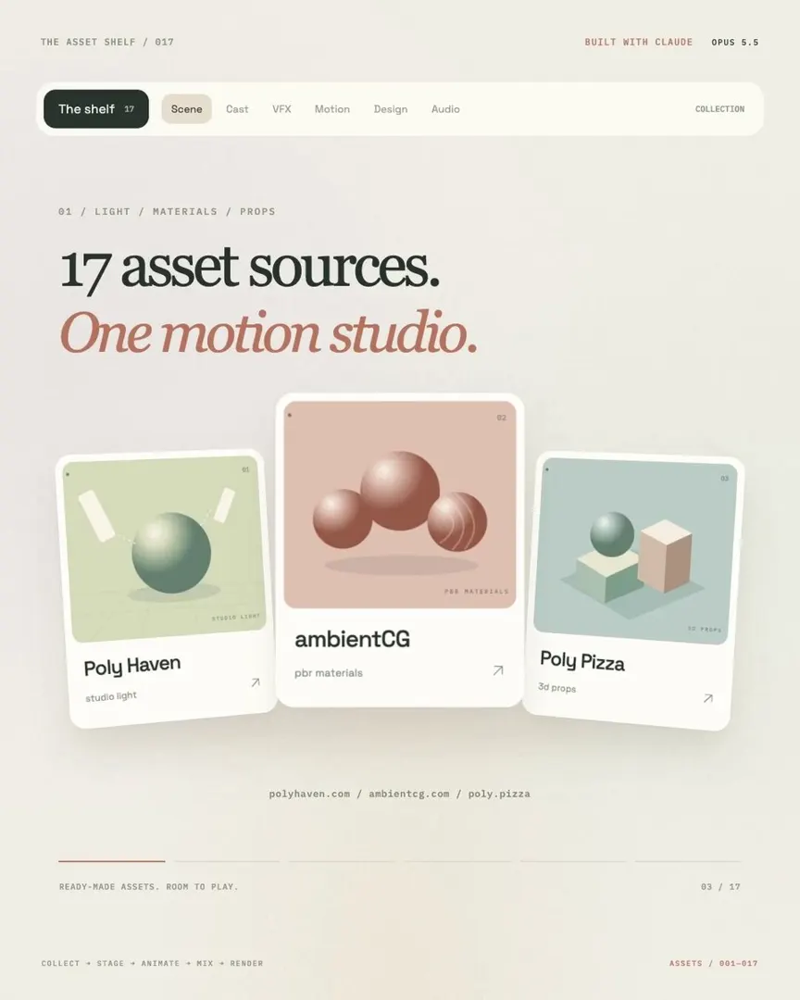

原帖（照录）
前 Anthropic 动效设计师，一口气分享了 17 个顶级创作素材网站！
17 个宝藏资源，我先收藏了：
🎨 3D 场景与模型
Poly Haven — 专业 HDRI 环境光照
https://polyhaven.com
ambientCG — 真实感 PBR 材质
https://ambientcg.com
Poly Pizza — 低多边形 3D 模型
https://poly.pizza
Quaternius — 带骨骼绑定的角色模型
https://quaternius.com
Mixamo — 现成的角色动作动画
https://mixamo.com
Spline Community — 可二次编辑的 3D 场景
https://community.spline.design✨ 特效与动画
Kenney Particle Pack — 粒子特效素材
https://kenney.nl/assets/particle-pack
ActionVFX — 火焰、烟雾、爆炸特效
https://actionvfx.com/products
Texturelabs — 颗粒、噪点与纹理叠加
https://texturelabs.org
LottieFiles — 现成的矢量动画
https://lottiefiles.com/free-animations
Rive Marketplace — 交互式动画资源
https://rive.app/marketplace🖌️ 插画、图标与字体
unDraw — 可编辑 SVG 插画
https://undraw.co/illustrations
Lucide — 风格统一的 SVG 图标
https://lucide.dev
Google Fonts — 免费字体资源
https://fonts.google.com🔊 音效与音乐
Freesound — 环境音与拟音素材
https://freesound.org
Sonniss GDC — 专业音效资源包
https://sonniss.com/gameaudiogdc
Mixkit — 视频背景音乐
https://mixkit.co/free-stock-music/你只需要挑选素材，把文件和分镜脚本交给 Claude，让 AI 编写场景和动画代码。
素材收集 → 场景搭建 → 动画制作 → 音效混合 → 最终渲染。先收藏起来吧，下次做动画、3D 场景或者产品演示，真的用得上！
— 洛克船长（@slashui），2026-10-30。原帖中链接为 t.co 短链，此处还原为展开地址。附视频 1080×1350、15 秒；引用了 eigen（@e1genqq）的英文帖。
来源链路：这份清单从哪来
- 洛克船长中文帖（2026-10-30 21:09 SGT）——本页照录的内容，是对下一条的中文编译。
- eigen（@e1genqq）英文帖（2026-10-30 04:11 SGT，约 2.1 万浏览、200 赞、341 收藏）：开头是 “HOLY F*CK, ex-Anthropic motion designer shared 17 assets for your own motion studio.”，随后按 01–17 编号逐条列出同一组网站，结尾是 “Pick your assets. Give Claude the files and a shot list. Have it write the scene and animation code.” 清单顺序、分类与洛克船长版一一对应。
- eigen 更早的 X 长文《How to Build an Automated Motion Design System that Generates $$$》（2026-10-13，约 47.9 万浏览）——英文帖所引用的帖子。内容是用 Claude Opus 5.5 + Remotion / 自写
seek(t)渲染器 + Playwright/FFmpeg 搭一套可复用的产品动效生产线，并讨论如何当成服务出售。长文没有给出这 17 个网站。
⚠️ “前 Anthropic 动效设计师”未核实。两条帖子都没有点名这位设计师，也没有给出出处链接。eigen 自己的长文开头写的是“由一家有 200+ 常客的动效工作室的视觉特效总监撰写”，没有提到 Anthropic；eigen 的个人简介是 “just exploring AI / building random things · 3d & motion”。目前看不出这份清单与 Anthropic 有任何关系，这个头衔更像吸引点击的说法。英文帖里引号中的那句 “These ready-made assets for Opus 5.5 will replace my job.” 同样找不到出处。
17 个网站速览（附许可核对）
下表“许可”一栏为 2026-10-31 打开各站核对的结果；标 ⚠️ 的未能打开相关页或只凭常识，使用前请自行确认。“免费”不等于“随便用”，商用、再分发、喂给模型训练各有限制。
| # | 网站 | 做什么用 | 许可 / 门槛 |
|---|---|---|---|
| 🎨 3D 场景与模型 | |||
| 01 | Poly Haven | HDRI 环境光、贴图、模型 | 全部 CC0（官方许可页明确） |
| 02 | ambientCG | PBR 材质、HDRI | CC0 1.0，含预览渲染图（官方文档） |
| 03 | Poly Pizza | 低多边形模型，免登录下载 | ⚠️ 各模型 CC0 / CC-BY 不一，逐个看 |
| 04 | Quaternius | 带骨骼的角色、场景套件 | ⚠️ 通常标 CC0，以各包说明为准 |
| 05 | Mixamo | 自动绑骨 + 动作捕捉动画库 | 需 Adobe 账号；⚠️ 条款以 Adobe 为准 |
| 06 | Spline Community | 可 Remix 的 3D 网页场景 | ⚠️ 依作者设置，需 Spline 账号 |
| ✨ 特效与动画 | |||
| 07 | Kenney Particle Pack | 粒子贴图（512×512，80 个文件） | CC0（素材页明确） |
| 08 | ActionVFX | 实拍火焰、烟雾、爆炸素材 | ⚠️ 以付费为主，部分免费；本次抓取被站点安全检查拦下 |
| 09 | Texturelabs | 颗粒、噪点、做旧叠加纹理 | ⚠️ 本次未能读取条款 |
| 10 | LottieFiles | Lottie 矢量动画（JSON） | ⚠️ 免费区有自家许可，需看具体动画 |
| 11 | Rive Marketplace | 带状态机的交互动画 | ⚠️ 依作者设置 |
| 🖌️ 插画、图标与字体 | |||
| 12 | unDraw | 可改色的 SVG 插画 | 可商用、免署名；但禁止用于机器学习、打包再分发、仿站（自家许可） |
| 13 | Lucide | 风格统一的 SVG 图标 | ISC 许可（官方许可页） |
| 14 | Google Fonts | 标题与正文字体 | ⚠️ 多为 OFL，个别 Apache，逐款看 |
| 🔊 音效与音乐 | |||
| 15 | Freesound | 环境声、拟音 | ⚠️ 每条声音单独标 CC 许可，有的要求署名或禁商用；本次抓取 403 |
| 16 | Sonniss GDC | 每年 GDC 期间放出的免费音效包 | 页面写明免版税（royalty free）；⚠️ 细则见包内授权 |
| 17 | Mixkit | 免费背景音乐 | ⚠️ 适用 Mixkit License，看具体曲目 |
怎么用：帖子给的流程
两条帖子给的流程都是：素材收集 → 场景搭建 → 动画制作 → 音效混合 → 最终渲染。由人挑好素材，把文件和分镜（shot list）交给 Claude，让它写场景与动画代码。eigen 的长文讲得更细：动画写成“时间的纯函数” seek(t)，浏览器逐帧渲染、FFmpeg 合成 MP4；要做成可复用的系统，就把品牌数据和动画代码分开、渲染前先校验素材，再用联系表（contact sheet）抽帧复查。
核实与补充
- 清单本身是真的：17 个链接 2026-10-31 逐一访问，15 个正常打开；ActionVFX 返回 Vercel 安全检查（429），Freesound 返回 403。两者都是知名站点，打不开大概率是因为拒绝脚本访问，不代表链接失效。
- 头衔与引语：见上方 ⚠️，“前 Anthropic 动效设计师”与“will replace my job”都找不到出处。
- “顶级”“宝藏”属于推荐语：这些站点大多是 3D / 游戏圈多年的老牌免费资源（Poly Haven、Kenney、Mixamo 等），并不新；新意在于把它们当成交给编程智能体的素材库来用。
- 和 AI 一起用要多看一眼许可：unDraw 明确禁止用于机器学习；Freesound、Poly Pizza 的单条素材可能要求署名。让智能体批量下载素材时，最好同时记下每个文件的来源与许可（eigen 长文也建议给每次渲染存一份素材 manifest）。
- 推广属性：eigen 的长文后半部分在讲如何把动效生产线当成付费服务出售（文中自称示例价格“仅为示意”）；洛克船长版是转述加收藏推荐，没有商业链接。
延伸阅读（本站）
- Motion Prompt：把动画术语整理成喂给 AI 的动效库——同一作者，动效“名字”库，可与本清单的“素材”互补。
- 设计资源大赏：@amananimates 的 17 个设计资源——另一份“17 个”清单，偏网页 UI 组件。
- Motion2MixamoRig——一段真人视频，一键生成绑好骨骼的 Mixamo 角色，可接第 05 项。
- Opus 5.5 动效手册 · Opus 5.5 视频大赏 · Opus 5.5 动效实验室——用代码让 Claude 做动效的实例。
- 520 万条免费音频（Openverse）——比 Freesound 更大的开放许可音频检索入口。